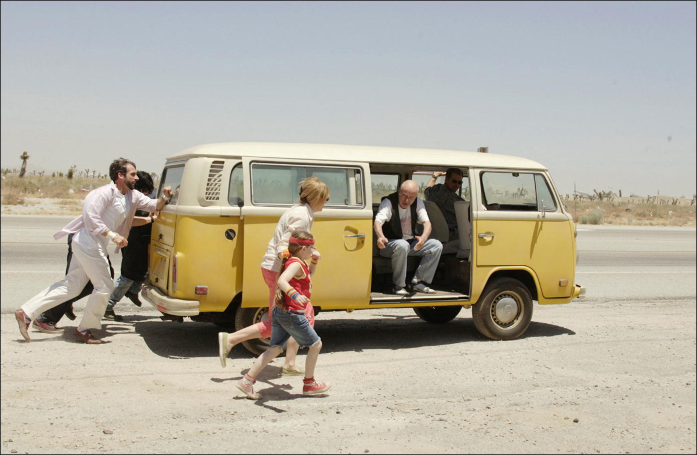

Little miss sunchine
Synopsis
L'histoire des Hoover. Le père, Richard, tente désespérément de vendre son “Parcours vers le succès en 9 étapes”. La mère, Sheryl, tente de dissimuler les travers de son frère, spécialiste suicidaire de Proust fraîchement sorti de l'hôpital après avoir été congédié par son amant. Les enfants Hoover ne sont pas non plus dépourvus de rêves improbables : la fille de 7 ans, Olive, se rêve en reine de beauté, tandis que son frère Dwayne a fait voeu de silence jusqu'à son entrée à l'Air Force Academy. Quand Olive décroche une invitation à concourir pour le titre très sélectif de Little Miss Sunshine en Californie, toute la famille décide de faire corps derrière elle. Les voilà donc entassés dans leur break Volkswagen rouillé : ils mettent le cap vers l'Ouest et entament un voyage tragi-comique de trois jours qui les mettra aux prises avec des événements inattendus...